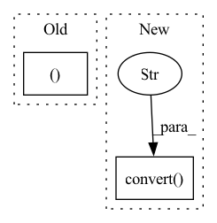

Pattern ID :40230
Before Change
return
named_tensor: List = []
tensor, _gt, _ = batch // tensor, label, batch_size
if isinstance(outputs, Dict):
pred = outputs["pred"]
elif isinstance(outputs, Tensor):After Change
raise Exception(f"Except `outputs` to be List or Dict, get {type(outputs)}")
for idx, image in enumerate(tensor):
transformed_image = transforms.ToPILImage()(image).convert("RGB" ) // WxH dimension
compressed_batch["images"].append(transformed_image) // batch_size x W x H dimension
compressed_batch["ground_truths"].append(gt[idx].item())
compressed_batch["predictions"].append(pred[idx].item())In pattern: SUPERPATTERN
Frequency: 3
Non-data size: 2
Instances Fragment ID: 114209016
Project Name: uetailab/uetai
Commit Name: ac795b0b1d6529a8ef130965ee4028565aa6620e
Time: 2021-09-30
Author: manhdung20112000@gmail.com
File Name: src/uetai/callbacks/image_monitor.py
M Class Name: ImageMonitorBase
N Class Name: ImageMonitorBase
M Method Name: on_train_batch_end(7)
N Method Name: on_train_batch_end(7)
M Parent Class: Callback
N Parent Class: Callback
M File Name: src/uetai/callbacks/image_monitor.py
N File Name: src/uetai/callbacks/image_monitor.py
M Start Line: 48
M End Line: 68
N Start Line: 67
N End Line: 88
Before Change
img_name = os.path.join(
self.img_path, self.data.loc[idx, "id_code"] + ".png")
image = Image.open(img_name)
image = image.resize((256, 256 ), resample=Image.BILINEAR)
label = torch.tensor(self.data.loc[idx, "diagnosis"])
return {After Change
fname = self.data.loc[idx, "id_code"]
img_name = os.path.join(
self.img_path, fname + ".png")
img = Image.open(img_name).convert("RGB" )
img = self.transform(img)
label = torch.tensor(self.data.loc[idx, "diagnosis"])
Fragment ID: 114209017
Project Name: tuttelikz/farabio
Commit Name: e0a58252c8a8bc4f5662faffc1a30e088b8082c9
Time: 2021-07-29
Author: s.askaruly@gmail.com
File Name: farabio/data/biodatasets.py
M Class Name: RetinopathyDataset
N Class Name: RetinopathyDataset
M Method Name: __getitem__(2)
N Method Name: __getitem__(2)
M Parent Class: Dataset
N Parent Class: Dataset
M File Name: farabio/data/biodatasets.py
N File Name: farabio/data/biodatasets.py
M Start Line: 611
M End Line: 620
N Start Line: 626
N End Line: 634
Before Change
img = imread(img_path)
img_dims = img.shape
H, W = img_dims[0], img_dims[1]
shortest_side_length = min(H,W)
minimum_scale_factor = float(self.crop_size) / float(shortest_side_length)
scale_low = max(minimum_scale_factor, self.scale_low)After Change
// H, W = img_dims[0], img_dims[1]
// PIL
img = PIL.Image.open(img_path)
img = img.convert("RGB" )
W, H = img.size // slightly confusing
shortest_side_length = min(H,W) Fragment ID: 114209014
Project Name: justin-tan/high-fidelity-generative-compression
Commit Name: d2436856c9ed336ea22cc8751138db0b72b89e36
Time: 2020-08-10
Author: jtan@spartan-login1.hpc.unimelb.edu.au
File Name: hific/utils/datasets.py
M Class Name: OpenImages
N Class Name: OpenImages
M Method Name: __getitem__(2)
N Method Name: __getitem__(2)
M Parent Class: BaseDataset
N Parent Class: BaseDataset
M File Name: hific/utils/datasets.py
N File Name: hific/utils/datasets.py
M Start Line: 170
M End Line: 183
N Start Line: 177
N End Line: 203